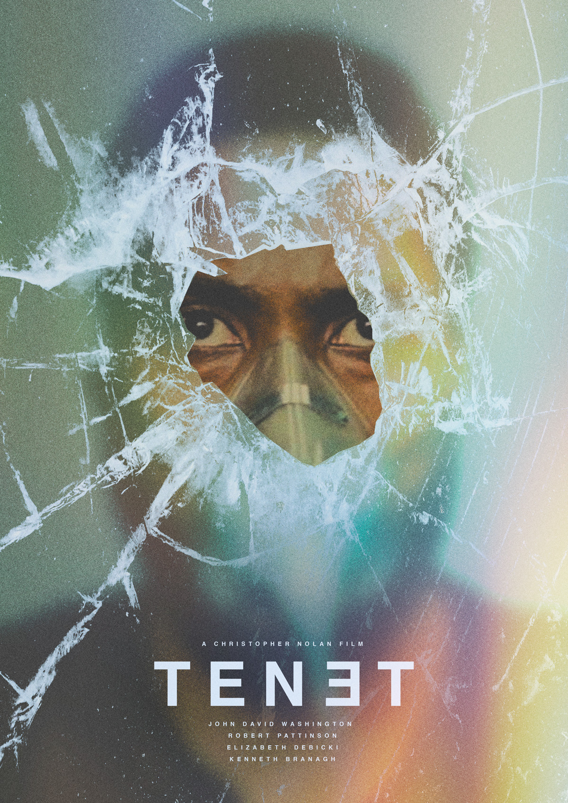

"Tenet" chegou aos cinemas e trouxe consigo uma experiência cinematográfica que desafia as convenções do tempo e do espaço. Dirigido pelo aclamado cineasta Christopher Nolan, conhecido por suas tramas complexas e visuais impressionantes, o filme mergulha os espectadores em um mundo de intrigas, espionagem e reviravoltas.
Manipulação Temporal em um Espetáculo Cinematográfico: Nolan, famoso por filmes como "A Origem" e a trilogia do "Cavaleiro das Trevas", leva sua paixão pela manipulação do tempo a um novo nível em "Tenet". A trama gira em torno de um protagonista (interpretado por John David Washington) que é recrutado para uma organização secreta que busca controlar o fluxo do tempo. A habilidade de inverter o tempo e o conceito de ação retrocausal lançam os personagens em uma série de sequências de ação que desafiam a lógica convencional. Cenas de Ação de Tirar o Fôlego: Como é típico nas produções de Nolan, "Tenet" não economiza nas cenas de ação espetaculares. O filme apresenta sequências intensas e intricadas que envolvem tiroteios, perseguições e até lutas coreografadas onde o tempo é manipulado de maneira impressionante. A combinação de efeitos práticos e visuais cria um espetáculo visual que mantém os espectadores grudados em suas poltronas.Desafio para a Mente do Espectador: A narrativa de "Tenet" é intrincada e exige a atenção do espectador. A viagem no tempo, a espionagem internacional e as alianças enigmáticas se entrelaçam de maneira complexa, convidando o público a decifrar os detalhes conforme a trama se desenrola.
Antecipação e Adaptação às Circunstâncias: "Tenet" não chegou sem desafios. Seu lançamento foi marcado por atrasos e ajustes devido à pandemia global, o que levou a uma adaptação criativa nas estratégias de distribuição. No entanto, a espera parece ter valido a pena, já que o filme atraiu grande interesse e entusiasmo dos fãs de Nolan e de amantes do cinema em todo o mundo.Conclusão: Com suas reviravoltas de enredo, ação eletrizante e exploração ousada do tempo, "Tenet" se consolida como um filme que não apenas entretém, mas também desafia as fronteiras do que é possível no cinema. Christopher Nolan mais uma vez prova sua mestria em criar experiências cinematográficas únicas e memoráveis.
